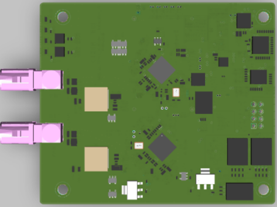

On this page
Deserializer
Deserializer (DES) boards for the MIG frame grabbers. They recover the GMSL / FPD-Link signal from the camera-side serializer (SER) back into MIPI-CSI-2.

What is GMSL?
GMSL (Gigabit Multimedia Serial Link) is an automotive SerDes (Serializer/Deserializer) technology. A camera-side serializer (SER) serializes video, control, and power into one signal carried over a single coax or STP cable, and a grabber-side deserializer (DES) recovers it back into MIPI-CSI-2 video.
Its control channel is bidirectional, so sensor, SER, and DES registers are configured over I2C on the same cable, and PoC (Power over Coax) even feeds power to the camera. A single cable reaches roughly 15 m, making it well suited to vehicle harnesses.
Link speeds by generation are GMSL1 (up to ~3.12 Gbps), GMSL2 (up to ~6 Gbps), and GMSL3 (up to ~12 Gbps), with newer DES parts offering backward-compatible modes. TI's FPD-Link III / IV is the equivalent alternative SerDes family.
Deserializers We Provide
- MAX9296A — ADI (Maxim) GMSL2/GMSL1 dual-link deserializer. Shipped as the default DES board on the MIG frame grabbers.
- MAX96724 — ADI (Maxim) GMSL2/GMSL1 quad-link deserializer supporting up to 4-channel camera input.
- DS90UB954 — TI FPD-Link III deserializer supporting up to 2-channel camera input.
- DS90UB9702 — TI FPD-Link IV deserializer with backward-compatible FPD-Link III mode.
Verified Combinations
| Maker | DES | SER | Type |
|---|---|---|---|
| ADI | MAX9296A | MAX96717 | GMSL2 |
| ADI | MAX9296A | MAX9295D | GMSL2 |
| ADI | MAX9296A | MAX96789F | GMSL2 |
| ADI | MAX9296A | MAX96717F | GMSL1 |
| ADI | MAX9296A | MAX9283 | GMSL1 |
| ADI | MAX96724 | MAX96717 | GMSL2 |
| ADI | MAX96724 | MAX96789F | GMSL2 |
| TI | DS90UB954 | DS90UB953 | FPD-Link III |
| TI | DS90UB9702 | DS90UB971 | FPD-Link IV |
The table lists combinations CIZEN TECH has verified in-house; many additional SER/DES combinations are also supported. Contact us for your specific camera / SerDes pairing.
Selecting the Deserializer
Use the Grabber terminal to select which onboard deserializer is active:
DES_INDEX_SEL 1// select ADI (Maxim) deserializerDES_INDEX_SEL TI// select TI deserializer
Resources
Need help? Troubleshooting · Contact technical support